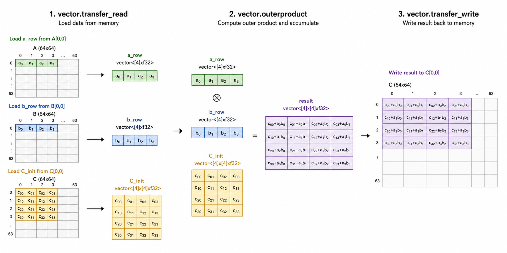

The LLVM Essence of Lowering MLIR to AArch64 with SME Support
The LLVM Essence of Lowering MLIR to AArch64 with SME Support
Hi Folks 👋. I'm investigating the performance of MLIR code on AArch64, specifically the M4 Pro (eventually leveraging Arm SME support), and comparing it to Apple Accelerate (AMX) and IREE. Some of my recent contributions to MLIR (see 202118, 204309 202766, and 201180 for more details) are related to these studies.
I'm still learning, and for this reason, I feel I have to bring Andrzej (aka @banach-space) from Arm into the discussion, to tell you, the reader, if you are interested in learning more about SME (and also SVE/SVE2) — in addition to the Arm blog and Arm doc — I recommend his two talks (as he suggested to me):
- 2023 LLVM Dev Mtg - Vectorisation in MLIR: Towards Scalable Vectors and Matrices (in collaboration with Diego Caballero from NVIDIA)
- 2024 LLVM Dev Mtg - Vectorization in MLIR: Towards Scalable Vectors and Matrices (Part 2)
Additionally, while I am merely an outsider to this process, I would like to acknowledge that none of this would have been possible without an extensive and highly demanding research effort involving the maintainers, co-maintainers, and numerous contributors to these dialects, as well as a community that has been exceptionally supportive, welcoming, and generous throughout.
What is this post about?
Shortly, I just wanted to answer the question: "How can I manually lower the MLIR code to AArch64 executables with SME support?" I think that this, while not ubiquitous, is interesting enough to share, and I hope it will be useful for others. Note that, while I'm using Apple M4 Pro as a reference (and I struggled a bit with it, take a look at the issue 204853), the instructions and steps are valid (except for the -isysroot flag) for any AArch64 platform with SME support. That's my target triple: arm64-apple-darwin25.5.0.
Premise
I'm using MLIR/LLVM 22.1.2 (commit: 586b892672) built from source. If you want to reproduce the steps, I'll suggest you to set the following environment variables:
export PATH=/path/to/llvm-project/build/bin:$PATH
export LLVM_BUILD_DIR=/path/to/llvm-project/build
The MLIR source code
We can simply consider the following MLIR rank-1 outer product GEMM microkernel, i.e., in BLAS terminology, a GER (General Rank-1 update):

// main.mlir
func.func @matmul(%A : memref<64x64xf32>,
%B : memref<64x64xf32>,
%C : memref<64x64xf32>)
attributes {arm_locally_streaming} {
%c0 = arith.constant 0 : index
%pad = arith.constant 0.0 : f32
%vscale = vector.vscale
%c4 = arith.constant 4 : index
%step = arith.muli %vscale, %c4 : index
%C_init = vector.transfer_read %C[%c0, %c0], %pad
{in_bounds = [true, true]}
: memref<64x64xf32>, vector<[4]x[4]xf32>
%a_row = vector.transfer_read %A[%c0, %c0], %pad
{in_bounds = [true]}
: memref<64x64xf32>, vector<[4]xf32>
%b_row = vector.transfer_read %B[%c0, %c0], %pad
{in_bounds = [true]}
: memref<64x64xf32>, vector<[4]xf32>
%result = vector.outerproduct %a_row, %b_row, %C_init
{kind = #vector.kind}
: vector<[4]xf32>, vector<[4]xf32>
vector.transfer_write %result, %C[%c0, %c0]
{in_bounds = [true, true]}
: vector<[4]x[4]xf32>, memref<64x64xf32>
return
}
I'll leave you with some references to the MLIR dialects used in this kernel:
vector.transfer_read— reads a supervector from memory into an SSA vector value,vector.transfer_write— writes a supervector to memory, andvector.outerproduct— computes the outer product of two vectors and accumulates the result.
Conceptually, this kernel computes the outer product of two vectors (rows of matrices A and B) and accumulates the result into matrix C. The arm_locally_streaming attribute indicates that this function is intended to leverage Arm's locally streaming memory model, which can be beneficial for performance on certain architectures.
As you can see, the vector.transfer_read returns a vector where the dimension is wrapped with square brackets, e.g., vector<[4]xf32> and vector<[4]x[4]xf32>. The dimension of the vector is scalable, i.e., %vscale * 4 where %vscale is a runtime value that depends on the hardware capabilities.
For instance, SVE from Armv8.2-A and SME from Armv9-A onwards support a vector length that can vary from 128 to 2048 bits in multiples of 128 bits.
The SSA value %vscale is the so-called vector scale; it represents this runtime scaling factor, allowing a single compiled program to adapt automatically to different vector lengths.
The following snippet continues the previous one, showing the main function that allocates memory for matrices A, B, and C, fills them with initial values, calls the matrix multiplication function, and then prints the result. The expected output is 1, since the outer product of two vectors filled with 1.0 will yield a matrix where all elements are 1.0, and the first element of C will be updated from 0.0 to 1.0 after the operation.
// main.mlir (contd.)
func.func @main() -> i32 {
%f0 = arith.constant 0.0 : f32
%f1 = arith.constant 1.0 : f32
%c0 = arith.constant 0 : index
%A = memref.alloc() : memref<64x64xf32>
%B = memref.alloc() : memref<64x64xf32>
%C = memref.alloc() : memref<64x64xf32>
linalg.fill ins(%f1 : f32) outs(%A : memref<64x64xf32>)
linalg.fill ins(%f1 : f32) outs(%B : memref<64x64xf32>)
linalg.fill ins(%f0 : f32) outs(%C : memref<64x64xf32>)
func.call @matmul(%A, %B, %C)
: (memref<64x64xf32>, memref<64x64xf32>, memref<64x64xf32>) -> ()
%val = memref.load %C[%c0, %c0] : memref<64x64xf32>
vector.print %val : f32
memref.dealloc %A : memref<64x64xf32>
memref.dealloc %B : memref<64x64xf32>
memref.dealloc %C : memref<64x64xf32>
%ret = arith.constant 0 : i32
return %ret : i32
}
Lowering MLIR to the llvm dialect
The first step is to lower the MLIR code to the llvm dialect. This can be done using the mlir-opt tool with the appropriate passes.
mlir-opt main.mlir --pass-pipeline='builtin.module(
arm-sme-vector-legalization,
canonicalize,
cse,
convert-vector-to-arm-sme,
func.func(
arm-sme-outer-product-fusion,
convert-arm-sme-to-scf,
convert-vector-to-scf{full-unroll},
enable-arm-streaming{streaming-mode=streaming-locally za-mode=new-za if-required-by-ops},
convert-scf-to-cf,
convert-arm-sme-to-llvm
),
canonicalize,
cse,
convert-linalg-to-loops,
convert-scf-to-cf,
convert-vector-to-llvm{enable-arm-sve},
expand-strided-metadata,
lower-affine,
finalize-memref-to-llvm,
convert-func-to-llvm,
convert-arith-to-llvm,
convert-cf-to-llvm,
convert-index-to-llvm,
reconcile-unrealized-casts
)' > main-llvm.mlir
Alternatively, you can simply use the following (while not production ready, this is a convenient way to test the new SME support in MLIR):
mlir-opt main.mlir \
--test-lower-to-arm-sme \
--convert-vector-to-llvm="enable-arm-sve" \
--test-lower-to-llvm > main-llvm.mlir
Unfold me if you want to see the lowering to the
llvm dialect
module {
llvm.func @free(!llvm.ptr)
llvm.func @malloc(i64) -> !llvm.ptr
llvm.func @printNewline()
llvm.func @printF32(f32)
llvm.func @matmul(%arg0: !llvm.ptr, %arg1: !llvm.ptr, %arg2: i64, %arg3: i64, %arg4: i64, %arg5: i64, %arg6: i64, %arg7: !llvm.ptr, %arg8: !llvm.ptr, %arg9: i64, %arg10: i64, %arg11: i64, %arg12: i64, %arg13: i64, %arg14: !llvm.ptr, %arg15: !llvm.ptr, %arg16: i64, %arg17: i64, %arg18: i64, %arg19: i64, %arg20: i64) attributes {arm_locally_streaming, arm_new_za} {
%0 = llvm.mlir.poison : !llvm.struct<(ptr, ptr, i64, array<2 x i64>, array<2 x i64>)>
%1 = llvm.insertvalue %arg14, %0[0] : !llvm.struct<(ptr, ptr, i64, array<2 x i64>, array<2 x i64>)>
%2 = llvm.insertvalue %arg15, %1[1] : !llvm.struct<(ptr, ptr, i64, array<2 x i64>, array<2 x i64>)>
%3 = llvm.insertvalue %arg16, %2[2] : !llvm.struct<(ptr, ptr, i64, array<2 x i64>, array<2 x i64>)>
%4 = llvm.insertvalue %arg17, %3[3, 0] : !llvm.struct<(ptr, ptr, i64, array<2 x i64>, array<2 x i64>)>
%5 = llvm.insertvalue %arg19, %4[4, 0] : !llvm.struct<(ptr, ptr, i64, array<2 x i64>, array<2 x i64>)>
%6 = llvm.insertvalue %arg18, %5[3, 1] : !llvm.struct<(ptr, ptr, i64, array<2 x i64>, array<2 x i64>)>
%7 = llvm.insertvalue %arg20, %6[4, 1] : !llvm.struct<(ptr, ptr, i64, array<2 x i64>, array<2 x i64>)>
%8 = llvm.mlir.poison : !llvm.struct<(ptr, ptr, i64, array<2 x i64>, array<2 x i64>)>
%9 = llvm.insertvalue %arg7, %8[0] : !llvm.struct<(ptr, ptr, i64, array<2 x i64>, array<2 x i64>)>
%10 = llvm.insertvalue %arg8, %9[1] : !llvm.struct<(ptr, ptr, i64, array<2 x i64>, array<2 x i64>)>
%11 = llvm.insertvalue %arg9, %10[2] : !llvm.struct<(ptr, ptr, i64, array<2 x i64>, array<2 x i64>)>
%12 = llvm.insertvalue %arg10, %11[3, 0] : !llvm.struct<(ptr, ptr, i64, array<2 x i64>, array<2 x i64>)>
%13 = llvm.insertvalue %arg12, %12[4, 0] : !llvm.struct<(ptr, ptr, i64, array<2 x i64>, array<2 x i64>)>
%14 = llvm.insertvalue %arg11, %13[3, 1] : !llvm.struct<(ptr, ptr, i64, array<2 x i64>, array<2 x i64>)>
%15 = llvm.insertvalue %arg13, %14[4, 1] : !llvm.struct<(ptr, ptr, i64, array<2 x i64>, array<2 x i64>)>
%16 = llvm.mlir.poison : !llvm.struct<(ptr, ptr, i64, array<2 x i64>, array<2 x i64>)>
%17 = llvm.insertvalue %arg0, %16[0] : !llvm.struct<(ptr, ptr, i64, array<2 x i64>, array<2 x i64>)>
%18 = llvm.insertvalue %arg1, %17[1] : !llvm.struct<(ptr, ptr, i64, array<2 x i64>, array<2 x i64>)>
%19 = llvm.insertvalue %arg2, %18[2] : !llvm.struct<(ptr, ptr, i64, array<2 x i64>, array<2 x i64>)>
%20 = llvm.insertvalue %arg3, %19[3, 0] : !llvm.struct<(ptr, ptr, i64, array<2 x i64>, array<2 x i64>)>
%21 = llvm.insertvalue %arg5, %20[4, 0] : !llvm.struct<(ptr, ptr, i64, array<2 x i64>, array<2 x i64>)>
%22 = llvm.insertvalue %arg4, %21[3, 1] : !llvm.struct<(ptr, ptr, i64, array<2 x i64>, array<2 x i64>)>
%23 = llvm.insertvalue %arg6, %22[4, 1] : !llvm.struct<(ptr, ptr, i64, array<2 x i64>, array<2 x i64>)>
%24 = llvm.mlir.constant(1 : index) : i64
%25 = llvm.mlir.constant(dense
The resulting llvm dialect code is quite verbose, as it includes explicit memory management and low-level operations.
However, we only need to focus on the implementation of the @matmul function, which contains the core logic of the matrix multiplication using Arm's SME intrinsics.
As you can see, the main loop of the matrix multiplication is implemented using a combination of arm_sme.intr.ld1w.horiz, arm_sme.intr.mopa, and arm_sme.intr.st1w.horiz intrinsics, which correspond to loading, multiplying-accumulating, and storing operations in the SME architecture.
From llvm dialect to LLVM-IR
This stage involves lowering the llvm dialect to LLVM-IR, which can be done straightforwardly using the mlir-translate tool.
mlir-translate --mlir-to-llvmir main-llvm.mlir > main.ll
Unfold me if you want to see the generated LLVM-IR
; ModuleID = 'LLVMDialectModule'
source_filename = "LLVMDialectModule"
declare void @free(ptr)
declare ptr @malloc(i64)
declare void @printNewline()
declare void @printF32(float)
define void @matmul(ptr %0, ptr %1, i64 %2, i64 %3, i64 %4, i64 %5, i64 %6, ptr %7, ptr %8, i64 %9, i64 %10, i64 %11, i64 %12, i64 %13, ptr %14, ptr %15, i64 %16, i64 %17, i64 %18, i64 %19, i64 %20) #0 {
%22 = insertvalue { ptr, ptr, i64, [2 x i64], [2 x i64] } poison, ptr %14, 0
%23 = insertvalue { ptr, ptr, i64, [2 x i64], [2 x i64] } %22, ptr %15, 1
%24 = insertvalue { ptr, ptr, i64, [2 x i64], [2 x i64] } %23, i64 %16, 2
%25 = insertvalue { ptr, ptr, i64, [2 x i64], [2 x i64] } %24, i64 %17, 3, 0
%26 = insertvalue { ptr, ptr, i64, [2 x i64], [2 x i64] } %25, i64 %19, 4, 0
%27 = insertvalue { ptr, ptr, i64, [2 x i64], [2 x i64] } %26, i64 %18, 3, 1
%28 = insertvalue { ptr, ptr, i64, [2 x i64], [2 x i64] } %27, i64 %20, 4, 1
%29 = insertvalue { ptr, ptr, i64, [2 x i64], [2 x i64] } poison, ptr %7, 0
%30 = insertvalue { ptr, ptr, i64, [2 x i64], [2 x i64] } %29, ptr %8, 1
%31 = insertvalue { ptr, ptr, i64, [2 x i64], [2 x i64] } %30, i64 %9, 2
%32 = insertvalue { ptr, ptr, i64, [2 x i64], [2 x i64] } %31, i64 %10, 3, 0
%33 = insertvalue { ptr, ptr, i64, [2 x i64], [2 x i64] } %32, i64 %12, 4, 0
%34 = insertvalue { ptr, ptr, i64, [2 x i64], [2 x i64] } %33, i64 %11, 3, 1
%35 = insertvalue { ptr, ptr, i64, [2 x i64], [2 x i64] } %34, i64 %13, 4, 1
%36 = insertvalue { ptr, ptr, i64, [2 x i64], [2 x i64] } poison, ptr %0, 0
%37 = insertvalue { ptr, ptr, i64, [2 x i64], [2 x i64] } %36, ptr %1, 1
%38 = insertvalue { ptr, ptr, i64, [2 x i64], [2 x i64] } %37, i64 %2, 2
%39 = insertvalue { ptr, ptr, i64, [2 x i64], [2 x i64] } %38, i64 %3, 3, 0
%40 = insertvalue { ptr, ptr, i64, [2 x i64], [2 x i64] } %39, i64 %5, 4, 0
%41 = insertvalue { ptr, ptr, i64, [2 x i64], [2 x i64] } %40, i64 %4, 3, 1
%42 = insertvalue { ptr, ptr, i64, [2 x i64], [2 x i64] } %41, i64 %6, 4, 1
%43 = call i64 @llvm.vscale.i64()
%44 = mul i64 %43, 4
br label %45
45: ; preds = %48, %21
%46 = phi i64 [ %54, %48 ], [ 0, %21 ]
%47 = icmp slt i64 %46, %44
br i1 %47, label %48, label %55
48: ; preds = %45
%49 = extractvalue { ptr, ptr, i64, [2 x i64], [2 x i64] } %28, 1
%50 = mul i64 %46, 64
%51 = add i64 %50, 0
%52 = getelementptr float, ptr %49, i64 %51
%53 = trunc i64 %46 to i32
call void @llvm.aarch64.sme.ld1w.horiz.p0(
Again, the generated LLVM-IR code is quite verbose, but it contains the same logic as the llvm dialect code.
What is important to note is that the SME intrinsics are preserved in the LLVM-IR.
LLVM uses its own naming convention for the SME intrinsics, which is different from the one used in the llvm dialect.
We can easily inspect the generated LLVM-IR code and see the following calls to the SME intrinsics:
llvm.vscale.i64()— this intrinsic returns the runtime vector scale factor, which is multiplied by the loop increment (4 in this case) to determine the actual number of loop iterations based on the hardware's vector length capabilities.llvm.aarch64.sme.ld1w.horiz.p0— this intrinsic corresponds to thearm_sme.intr.ld1w.horizintrinsic in thellvmdialect. It loads a vector of 4 32-bit floating-point values from memory into an SME register, using a scalable predicate mask (<vscale x 4 x i1>).llvm.aarch64.sme.mopa.nxv4f32— this intrinsic corresponds to thearm_sme.intr.mopaintrinsic in thellvmdialect, which performs a multiply-accumulate operation on two vectors of 4 32-bit floating-point values and accumulates the result into an SME register.llvm.aarch64.sme.st1w.horiz.p0— this intrinsic corresponds to thearm_sme.intr.st1w.horizintrinsic in thellvmdialect, which stores a vector of 4 32-bit floating-point values from an SME register into memory.
From LLVM-IR to AArch64 assembly
We can use the LLVM toolchain to compile the generated LLVM-IR code into AArch64 assembly code. This can be done using the llc tool, which is part of the LLVM project.
llc -O3 -march=aarch64 -mcpu=apple-m4 \
-mattr="+sme,+sme2" -filetype=asm \
-o main.s main.ll
Note that on macOS (Apple Silicon - M4 Pro), SVE instructions are not accessible outside streaming mode, the kernel does not expose SVE at EL0. Two things are worth noting here:
- If in the previous command we add +sve,+sve2 to the -mattr flag, LLVM can deliberately generate SVE instructions (e.g.,
cntw), but they will trigger EXC_BAD_INSTRUCTION (SIGILL, exit 132) when executed, because the kernel does not expose SVE at EL0. - If you are in a system that supports SVE at EL0 (e.g., Linux on Arm), you can execute the generated SVE instructions without any issues, as the kernel will expose SVE at EL0 and allow user-space applications to use SVE instructions.
Unfold me if you want to see the generated AArch64 assembly code
.build_version macos, 26, 0
.section __TEXT,__text,regular,pure_instructions
.globl _matmul ; -- Begin function matmul
.p2align 2
_matmul: ; @matmul
.cfi_startproc
; %bb.0:
stp d15, d14, [sp, #-80]! ; 16-byte Folded Spill
.cfi_def_cfa_offset 80
stp d13, d12, [sp, #16] ; 16-byte Folded Spill
stp d11, d10, [sp, #32] ; 16-byte Folded Spill
stp d9, d8, [sp, #48] ; 16-byte Folded Spill
stp x29, x30, [sp, #64] ; 16-byte Folded Spill
.cfi_offset w30, -8
.cfi_offset w29, -16
.cfi_offset b8, -24
.cfi_offset b9, -32
.cfi_offset b10, -40
.cfi_offset b11, -48
.cfi_offset b12, -56
.cfi_offset b13, -64
.cfi_offset b14, -72
.cfi_offset b15, -80
mrs x8, TPIDR2_EL0
cbz x8, LBB0_2
; %bb.1:
bl ___arm_tpidr2_save
msr TPIDR2_EL0, xzr
zero {za}
LBB0_2:
smstart za
smstart sm
mov x11, #0 ; =0x0
mov x12, #0 ; =0x0
ldr x10, [sp, #80]
ldr x8, [sp, #136]
cntw x9
ptrue p0.s
cmp x12, x9
b.ge LBB0_4
LBB0_3: ; =>This Inner Loop Header: Depth=1
add x13, x8, x11
ld1w {za0h.s[w12, 0]}, p0/z, [x13]
add x12, x12, #1
add x11, x11, #256
cmp x12, x9
b.lt LBB0_3
LBB0_4:
mov x11, #0 ; =0x0
mov x12, #0 ; =0x0
ldr z0, [x1]
ldr z1, [x10]
ptrue p0.s
fmopa za0.s, p0/m, p0/m, z0.s, z1.s
cmp x12, x9
b.ge LBB0_6
LBB0_5: ; =>This Inner Loop Header: Depth=1
add x10, x8, x11
st1w {za0h.s[w12, 0]}, p0, [x10]
add x12, x12, #1
add x11, x11, #256
cmp x12, x9
b.lt LBB0_5
LBB0_6:
smstop sm
smstop za
ldp x29, x30, [sp, #64] ; 16-byte Folded Reload
ldp d9, d8, [sp, #48] ; 16-byte Folded Reload
ldp d11, d10, [sp, #32] ; 16-byte Folded Reload
ldp d13, d12, [sp, #16] ; 16-byte Folded Reload
ldp d15, d14, [sp], #80 ; 16-byte Folded Reload
.cfi_def_cfa_offset 0
.cfi_restore w30
.cfi_restore w29
.cfi_restore b8
.cfi_restore b9
.cfi_restore b10
.cfi_restore b11
.cfi_restore b12
.cfi_restore b13
.cfi_restore b14
.cfi_restore b15
ret
.cfi_endproc
; -- End function
.globl _main ; -- Begin function main
.p2align 2
_main: ; @main
.cfi_startproc
; %bb.0:
sub sp, sp, #160
stp x22, x21, [sp, #112] ; 16-byte Folded Spill
stp x20, x19, [sp, #128] ; 16-byte Folded Spill
stp x29, x30, [sp, #144] ; 16-byte Folded Spill
.cfi_def_cfa_offset 160
.cfi_offset w30, -8
.cfi_offset w29, -16
.cfi_offset w19, -24
.cfi_offset w20, -32
.cfi_offset w21, -40
.cfi_offset w22, -48
mov w0, #16384 ; =0x4000
bl _malloc
mov x19, x0
mov w21, #1 ; =0x1
mov w22, #64 ; =0x40
mov w0, #16384 ; =0x4000
bl _malloc
mov x20, x0
mov w0, #16384 ; =0x4000
bl _malloc
mov x8, #0 ; =0x0
mov x9, #0 ; =0x0
mov w10, #1065353216 ; =0x3f800000
b LBB1_2
LBB1_1: ; in Loop: Header=BB1_2 Depth=1
add x9, x9, #1
add x8, x8, #256
LBB1_2: ; =>This Loop Header: Depth=1
; Child Loop BB1_4 Depth 2
cmp x9, #63
b.gt LBB1_5
; %bb.3: ; %.preheader2
; in Loop: Header=BB1_2 Depth=1
mov x11, #0 ; =0x0
mov x12, x8
cmp x11, #63
b.gt LBB1_1
LBB1_4: ; Parent Loop BB1_2 Depth=1
; => This Inner Loop Header: Depth=2
str w10, [x19, x12]
add x11, x11, #1
add x12, x12, #4
cmp x11, #63
b.le LBB1_4
b LBB1_1
LBB1_5: ; %.preheader1
mov x8, #0 ; =0x0
mov x9, #0 ; =0x0
mov w10, #1065353216 ; =0x3f800000
b LBB1_7
LBB1_6: ; in Loop: Header=BB1_7 Depth=1
add x9, x9, #1
add x8, x8, #256
LBB1_7: ; =>This Loop Header: Depth=1
; Child Loop BB1_9 Depth 2
cmp x9, #63
b.gt LBB1_10
; %bb.8: ; %.preheader
; in Loop: Header=BB1_7 Depth=1
mov x11, #0 ; =0x0
mov x12, x8
cmp x11, #63
b.gt LBB1_6
LBB1_9: ; Parent Loop BB1_7 Depth=1
; => This Inner Loop Header: Depth=2
str w10, [x20, x12]
add x11, x11, #1
add x12, x12, #4
cmp x11, #63
b.le LBB1_9
b LBB1_6
LBB1_10:
stp x0, x0, [sp, #48]
stp x20, xzr, [sp]
stp xzr, x22, [sp, #64]
stp x22, x22, [sp, #16]
stp x22, x22, [sp, #80]
str x21, [sp, #96]
stp x22, x21, [sp, #32]
mov x21, x0
mov x0, x19
mov x1, x19
mov x2, #0 ; =0x0
mov w3, #64 ; =0x40
mov w4, #64 ; =0x40
mov w5, #64 ; =0x40
mov w6, #1 ; =0x1
mov x7, x20
bl _matmul
ldr s0, [x21]
bl _printF32
bl _printNewline
mov x0, x19
bl _free
mov x0, x20
bl _free
mov x0, x21
bl _free
mov w0, #0 ; =0x0
ldp x29, x30, [sp, #144] ; 16-byte Folded Reload
ldp x20, x19, [sp, #128] ; 16-byte Folded Reload
ldp x22, x21, [sp, #112] ; 16-byte Folded Reload
add sp, sp, #160
ret
.cfi_endproc
; -- End function
.subsections_via_symbols
The generated AArch64 assembly code contains the same logic as the LLVM-IR code. The SME intrinsics are translated into their corresponding AArch64 assembly instructions, which are used to perform the matrix multiplication operation. We can easily inspect the generated AArch64 assembly code and see the following SME instructions:
smstart zaandsmstart sm— these instructions start the SME streaming mode for the ZA and SM register files, respectively.ld1w {za0h.s[w12, 0]}, p0/z, [x13]— this instruction loads a vector of 4 32-bit floating-point values from memory into the ZA register file.fmopa za0.s, p0/m, p0/m, z0.s, z1.s— this instruction performs a multiply-accumulate operation on two vectors of 4 32-bit floating-point values and accumulates the result into the ZA register file.st1w {za0h.s[w12, 0]}, p0, [x10]— this instruction stores a vector of 4 32-bit floating-point values from the ZA register file into memory.smstop smandsmstop za— these instructions stop the SME streaming mode for the SM and ZA register files, respectively.
From AArch64 assembly to object code
Since we want to run the generated AArch64 assembly code we need to assemble it into object code. As always, LLVM provides llvm-mc tool, which is a low-level assembler and disassembler. We can use it to assemble the generated AArch64 assembly code into object code as follows:
llvm-mc -arch=aarch64 \
-mattr="+sme,+sme2" \
--filetype=obj main.s -o main.o
As before, on macOS (Apple Silicon - M4 Pro), SVE instructions are not accessible outside streaming mode, the kernel does not expose SVE at EL0. See above for more details.
From object code to executable
This procedure is a bit different on macOS, as we need to use the ld64.lld linker, which is part of the LLVM project. On Linux, we can use the ld.lld linker, which is also part of the LLVM project. On Linux, additionally, there is no need to specify the -platform_version flag and the -syslibroot flag, as the linker can find the system libraries automatically.
SDK=$(xcrun --sdk macosx --show-sdk-path)
ld64.lld main.o \
-arch arm64 \
-platform_version macos 26.0.0 26.0.0 \
-syslibroot "$SDK" \
-L"$SDK/usr/lib" \
-L"$LLVM_BUILD_DIR/lib" \
-lSystem \
-lmlir_arm_sme_abi_stubs \
-lmlir_runner_utils \
-lmlir_c_runner_utils \
-rpath "$LLVM_BUILD_DIR/lib" \
-o main
As you can see, there are 3 MLIR dynamic libraries that we need to link against. If you want to see the code, I just leave you here the link for each of them:
- libmlir_arm_sme_abi_stubs is a library generated from ArmSMEStubs.cpp,
- libmlir_runner_utils is a library generated from ArmRunnerUtils.cpp,
- libmlir_c_runner_utils is a library generated from CRunnerUtils.cpp.
Finally, if we try to run the generated executable, we will be able to see the result of our print:
> ./main
1
Two one-shot solutions
If you've read this far, I'm really glad I brought you along on this little journey with me. At this point I have to reveal two secrets to you.
The former is that all steps from the "From LLVM-IR to AArch64 assembly" section onwards can be condensed into a single command using clang. Don't blame me, I like to understand everything in depth 🙏 By pipeling the outputs, we can obtain the final executable in a single command as follows:
mlir-opt main.mlir \
--test-lower-to-arm-sme \
--convert-vector-to-llvm="enable-arm-sve" \
--test-lower-to-llvm \
| mlir-translate --mlir-to-llvmir \
| clang -O3 \
-isysroot "$(xcrun --sdk macosx --show-sdk-path)" \
-mcpu=apple-m4 \
-x ir - \
-L"$LLVM_BUILD_DIR/lib" \
-lmlir_arm_sme_abi_stubs \
-lmlir_runner_utils \
-lmlir_c_runner_utils \
-Wl,-rpath,"$LLVM_BUILD_DIR/lib" \
-o main
It you want to JIT the generated MLIR in llvm dialect, you can use the mlir-runner tool, which is part of the MLIR project.
Again, don't blame me, I like to understand everything in depth 🫶
By pipeling the output out mlir-opt to mlir-runner, we can JIT the generated MLIR code in a single command:
mlir-opt main.mlir \
--test-lower-to-arm-sme \
--convert-vector-to-llvm="enable-arm-sve" \
--test-lower-to-llvm \
| mlir-runner \
-entry-point-result=i32 \
-shared-libs=$LLVM_BUILD_DIR/lib/libmlir_runner_utils.dylib,$LLVM_BUILD_DIR/lib/libmlir_c_runner_utils.dylib,$LLVM_BUILD_DIR/lib/libmlir_arm_sme_abi_stubs.dylib
Note that if you are on Linux, you need to replace .dylib with .so in the -shared-libs flag.
Conclusion
In this post, we have seen how to go from MLIR code in the llvm dialect to an executable that runs on AArch64 with SME.
We have seen how to use the MLIR toolchain to lower the MLIR code to LLVM-IR, and then how to use the LLVM toolchain to compile the generated LLVM-IR code into AArch64 assembly code, and then how to assemble the generated AArch64 assembly code into object code, and finally how to link the generated object code into an executable.
I hope you found this post useful. Feel free to reach out if you have questions or want to discuss anything related to this.